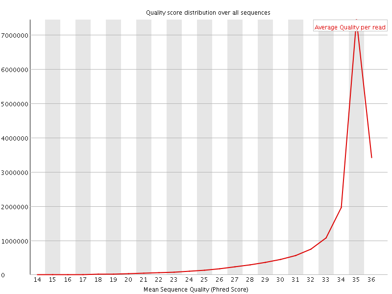
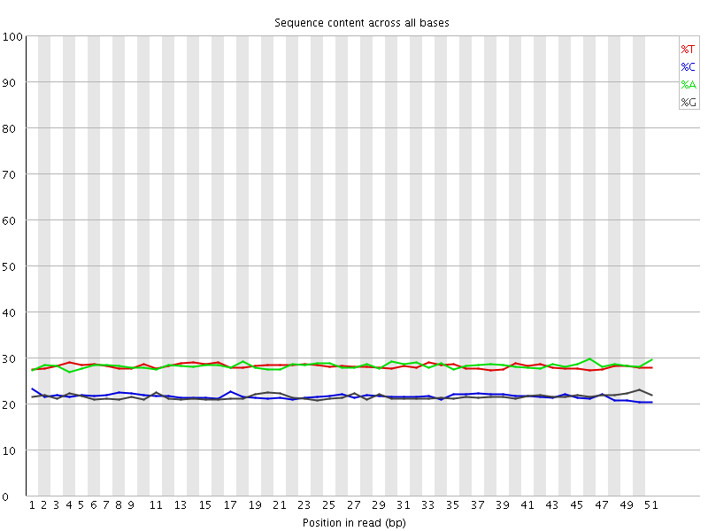
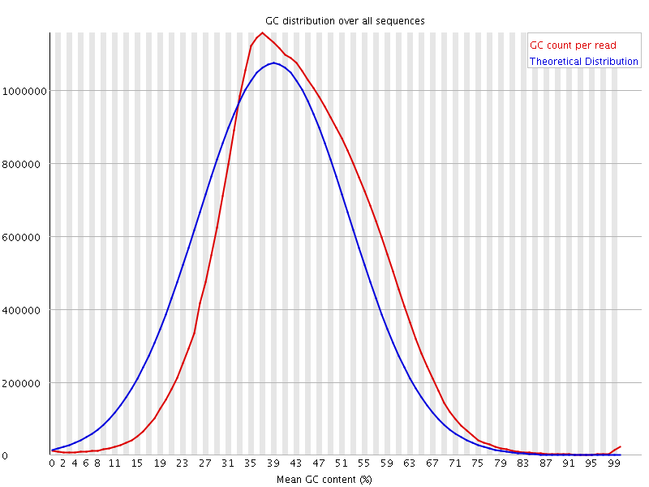
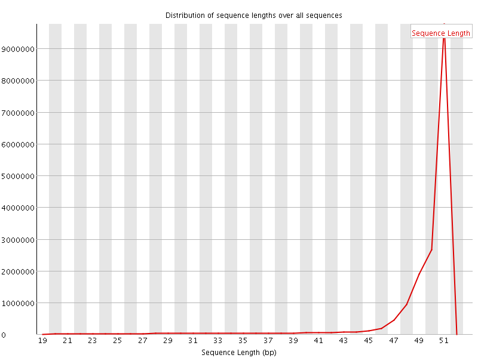
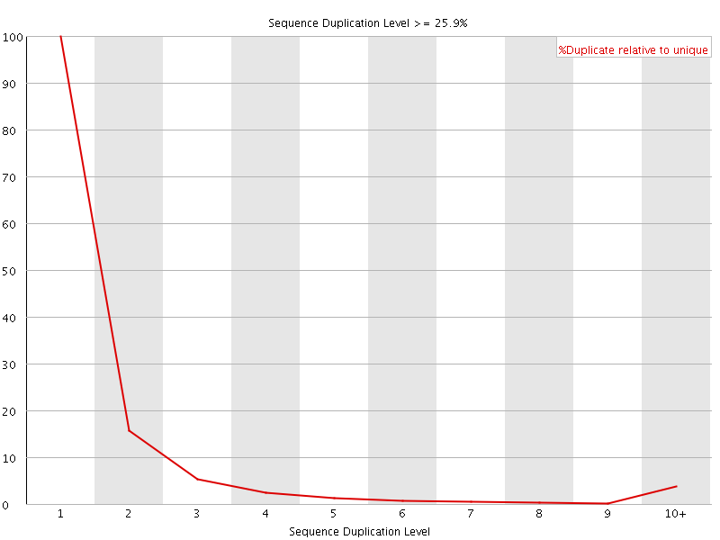
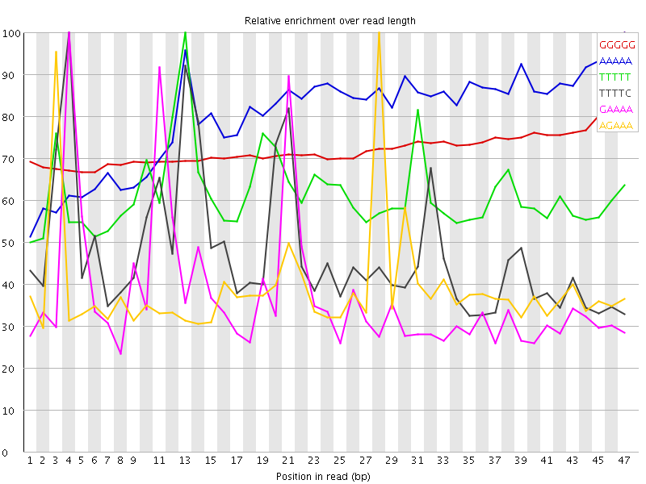

![[OK]](Icons/tick.png) Basic Statistics
Basic Statistics
| Measure | Value |
|---|---|
| Filename | 030-F0_S1_L004_R2_001_trimmed.fq.gz |
| File type | Conventional base calls |
| Encoding | Sanger / Illumina 1.9 |
| Total Sequences | 17272740 |
| Filtered Sequences | 0 |
| Sequence length | 20-51 |
| %GC | 43 |
Per base sequence quality

Per sequence quality scores

Per base sequence content

Per base GC content

![[WARN]](Icons/warning.png) Per sequence GC content
Per sequence GC content

Per base N content

Sequence Length Distribution

Sequence Duplication Levels

Overrepresented sequences
| Sequence | Count | Percentage | Possible Source |
|---|---|---|---|
| GGGGGGGGGGGGGGGGGGGGGGGGGGGGGGGGGGGGGGGGGGGGGGGGGGG | 17451 | 0.1010320308185036 | No Hit |
Kmer Content

| Sequence | Count | Obs/Exp Overall | Obs/Exp Max | Max Obs/Exp Position |
|---|---|---|---|---|
| GGGGG | 1978450 | 5.399963 | 7.4856434 | 47 |
| AAAAA | 6622795 | 4.620584 | 5.7940984 | 47 |
| TTTTT | 5332650 | 3.7865036 | 6.150632 | 13 |
| TTTTC | 3497810 | 3.2294848 | 6.762931 | 4 |
| GAAAA | 3444005 | 3.1564677 | 8.451554 | 4 |
| AGAAA | 3322435 | 3.0450473 | 7.830921 | 28 |
| CCAGG | 1419510 | 2.9100301 | 5.6524143 | 35 |
| AAGAA | 2753775 | 2.5238643 | 5.423098 | 2 |
| GGAAA | 1962375 | 2.3626623 | 8.3782215 | 20 |
| GAGAA | 1939685 | 2.3353438 | 8.702282 | 27 |
| TTTCC | 1915560 | 2.299718 | 5.074659 | 22 |
| AAAAT | 3217045 | 2.2523746 | 5.9667926 | 22 |
| TCCTC | 1431850 | 2.2352087 | 5.8031588 | 24 |
| ATTTT | 3136540 | 2.219311 | 5.2318044 | 2 |
| GGTGG | 1061785 | 2.2138503 | 5.3056645 | 18 |
| CCACC | 1082530 | 2.1896482 | 6.567809 | 8 |
| TTCCT | 1807530 | 2.1700227 | 5.1082435 | 23 |
| GAGGA | 1356725 | 2.1458209 | 5.0365376 | 2 |
| TGGAA | 1739415 | 2.1016033 | 5.8156414 | 19 |
| TTCAG | 1674600 | 2.016853 | 5.6138754 | 15 |
| TGAAA | 2153650 | 1.9808 | 6.6969514 | 10 |
| TCCAC | 1269335 | 1.9745532 | 5.6202435 | 35 |
| CTGAA | 1644240 | 1.9733331 | 7.96408 | 9 |
| AAATG | 2101625 | 1.9329506 | 6.8908515 | 23 |
| CATTT | 2092465 | 1.9251621 | 6.986519 | 1 |
| AAAAC | 2030795 | 1.848806 | 6.46989 | 5 |
| GTGGA | 1099075 | 1.7444434 | 6.5384307 | 47 |
| TGAGA | 1432540 | 1.7308294 | 8.033061 | 26 |
| CACCT | 1070455 | 1.6651795 | 5.0334754 | 9 |
| CCACT | 1062935 | 1.6534816 | 5.898346 | 36 |
| CATGG | 1016470 | 1.6025509 | 6.331604 | 17 |
| CAAGA | 1273240 | 1.5227113 | 5.744363 | 1 |
| CATCC | 959190 | 1.4920976 | 5.241944 | 33 |
| AGTGG | 934545 | 1.483303 | 5.822393 | 46 |
| AATGA | 1602875 | 1.4742298 | 6.3395553 | 24 |
| ATGGA | 1203830 | 1.4544969 | 5.2429333 | 18 |
| ATGAG | 1191615 | 1.4397382 | 7.6926575 | 25 |
| CACTT | 1196155 | 1.4309957 | 6.859556 | 37 |
| ACTGA | 1184165 | 1.4211745 | 7.263349 | 8 |
| CTTGA | 1180000 | 1.4211674 | 6.4203105 | 47 |
| AACTG | 1173425 | 1.408285 | 7.224883 | 7 |
| AAACT | 1467065 | 1.3403016 | 5.8541994 | 6 |
| AAATC | 1450825 | 1.325465 | 6.0892577 | 13 |
| AAGTG | 1073285 | 1.2967689 | 5.174436 | 47 |
| ACTTG | 1069155 | 1.2876678 | 5.420063 | 46 |
| AATCA | 1299725 | 1.1874208 | 5.9367943 | 14 |
| CCTCG | 431515 | 0.88180095 | 5.241542 | 25 |